Summary
This experiment investigates vulnerability scan scheduling. Central Composite design to optimize scan threads, port range, and timeout for scan duration and coverage.
The design varies 3 factors: scan threads (threads), ranging from 2 to 32, port range size (ports), ranging from 100 to 65535, and timeout ms (ms), ranging from 500 to 10000. The goal is to optimize 2 responses: scan duration min (min) (minimize) and coverage pct (%) (maximize). Fixed conditions held constant across all runs include scanner = openvas, target network = 10.0.0.0/16.
A Central Composite Design (CCD) was selected to fit a full quadratic response surface model, including curvature and interaction effects. With 3 factors this produces 22 runs including center points and axial (star) points that extend beyond the factorial range.
Quadratic response surface models were fitted to capture potential curvature and factor interactions. The RSM contour plots below visualize how pairs of factors jointly affect each response.
Key Findings
For scan duration min, the most influential factors were port range size (53.9%), timeout ms (37.4%), scan threads (8.8%). The best observed value was 14.6 (at scan threads = 17, port range size = 32817.5, timeout ms = 5250).
For coverage pct, the most influential factors were port range size (52.5%), timeout ms (33.4%), scan threads (14.1%). The best observed value was 91.3 (at scan threads = 17, port range size = 32817.5, timeout ms = 5250).
Recommended Next Steps
- Run confirmation experiments at the predicted optimal settings to validate the model.
- Consider whether any fixed factors should be varied in a future study.
Experimental Setup
Factors
| Factor | Low | High | Unit |
|---|
scan_threads | 2 | 32 | threads |
port_range_size | 100 | 65535 | ports |
timeout_ms | 500 | 10000 | ms |
Fixed: scanner = openvas, target_network = 10.0.0.0/16
Responses
| Response | Direction | Unit |
|---|
scan_duration_min | ↓ minimize | min |
coverage_pct | ↑ maximize | % |
Configuration
{
"metadata": {
"name": "Vulnerability Scan Scheduling",
"description": "Central Composite design to optimize scan threads, port range, and timeout for scan duration and coverage"
},
"factors": [
{
"name": "scan_threads",
"levels": [
"2",
"32"
],
"type": "continuous",
"unit": "threads"
},
{
"name": "port_range_size",
"levels": [
"100",
"65535"
],
"type": "continuous",
"unit": "ports"
},
{
"name": "timeout_ms",
"levels": [
"500",
"10000"
],
"type": "continuous",
"unit": "ms"
}
],
"fixed_factors": {
"scanner": "openvas",
"target_network": "10.0.0.0/16"
},
"responses": [
{
"name": "scan_duration_min",
"optimize": "minimize",
"unit": "min"
},
{
"name": "coverage_pct",
"optimize": "maximize",
"unit": "%"
}
],
"settings": {
"operation": "central_composite",
"test_script": "use_cases/60_vulnerability_scan_scheduling/sim.sh"
}
}
Experimental Matrix
The Central Composite Design produces 22 runs. Each row is one experiment with specific factor settings.
| Run | scan_threads | port_range_size | timeout_ms |
|---|
| 1 | 17 | 32817.5 | 5250 |
| 2 | 32 | 100 | 10000 |
| 3 | 2 | 65535 | 500 |
| 4 | 17 | 92551.2 | 5250 |
| 5 | 17 | 32817.5 | 5250 |
| 6 | -10.3861 | 32817.5 | 5250 |
| 7 | 17 | 32817.5 | -3422.27 |
| 8 | 17 | 32817.5 | 5250 |
| 9 | 32 | 65535 | 500 |
| 10 | 44.3861 | 32817.5 | 5250 |
| 11 | 17 | 32817.5 | 5250 |
| 12 | 17 | -26916.2 | 5250 |
| 13 | 17 | 32817.5 | 5250 |
| 14 | 2 | 100 | 10000 |
| 15 | 17 | 32817.5 | 5250 |
| 16 | 32 | 100 | 500 |
| 17 | 17 | 32817.5 | 13922.3 |
| 18 | 32 | 65535 | 10000 |
| 19 | 17 | 32817.5 | 5250 |
| 20 | 2 | 100 | 500 |
| 21 | 2 | 65535 | 10000 |
| 22 | 17 | 32817.5 | 5250 |
Step-by-Step Workflow
1
Preview the design
$ doe info --config use_cases/60_vulnerability_scan_scheduling/config.json
2
Generate the runner script
$ doe generate --config use_cases/60_vulnerability_scan_scheduling/config.json \
--output use_cases/60_vulnerability_scan_scheduling/results/run.sh --seed 42
3
Execute the experiments
$ bash use_cases/60_vulnerability_scan_scheduling/results/run.sh
4
Analyze results
$ doe analyze --config use_cases/60_vulnerability_scan_scheduling/config.json
5
Get optimization recommendations
$ doe optimize --config use_cases/60_vulnerability_scan_scheduling/config.json
6
Multi-objective optimization
With 2 competing responses, use --multi to find the best compromise via Derringer–Suich desirability.
$ doe optimize --config use_cases/60_vulnerability_scan_scheduling/config.json --multi
7
Generate the HTML report
$ doe report --config use_cases/60_vulnerability_scan_scheduling/config.json \
--output use_cases/60_vulnerability_scan_scheduling/results/report.html
Features Exercised
| Feature | Value |
|---|
| Design type | central_composite |
| Factor types | continuous (all 3) |
| Arg style | double-dash |
| Responses | 2 (scan_duration_min ↓, coverage_pct ↑) |
| Total runs | 22 |
Analysis Results
Generated from actual experiment runs using the DOE Helper Tool.
Response: scan_duration_min
Top factors: port_range_size (53.9%), timeout_ms (37.4%), scan_threads (8.8%).
ANOVA
| Source | DF | SS | MS | F | p-value |
|---|
| Source | DF | SS | MS | F | p-value |
| scan_threads | 4 | 370.9970 | 92.7492 | 0.068 | 0.9901 |
| port_range_size | 4 | 7634.2395 | 1908.5599 | 1.400 | 0.3092 |
| timeout_ms | 4 | 5171.2970 | 1292.8242 | 0.948 | 0.4797 |
| Lack | of | Fit | 2 | 1426.4715 | 713.2357 |
| Pure | Error | 7 | 9545.3587 | | |
| Error | 9 | 10971.8302 | 1363.6227 | | |
| Total | 21 | 24148.3636 | 1149.9221 | | |
Pareto Chart
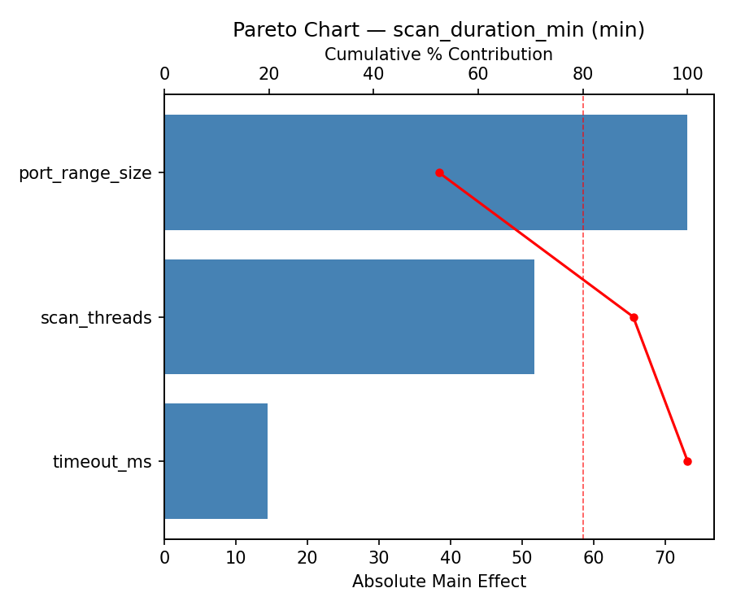
Main Effects Plot
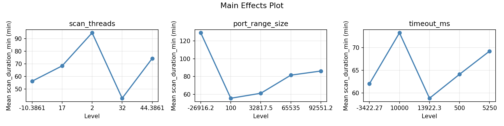
Normal Probability Plot of Effects
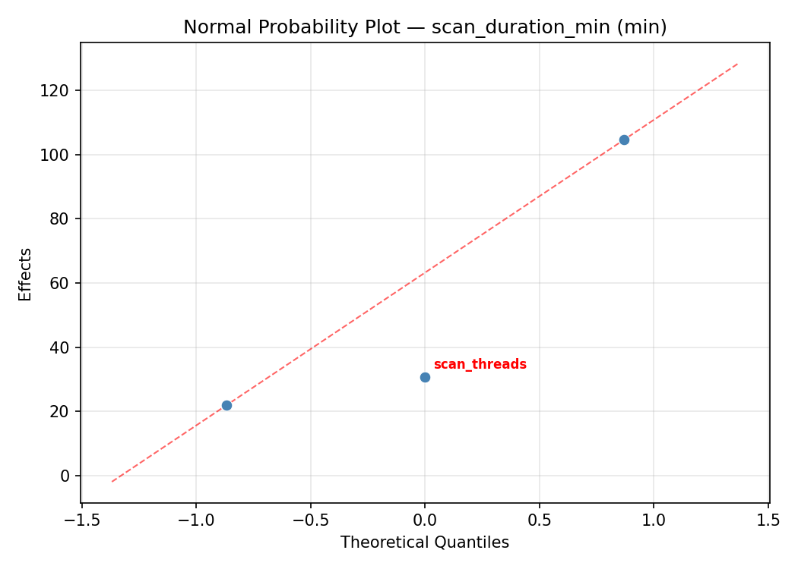
Half-Normal Plot of Effects
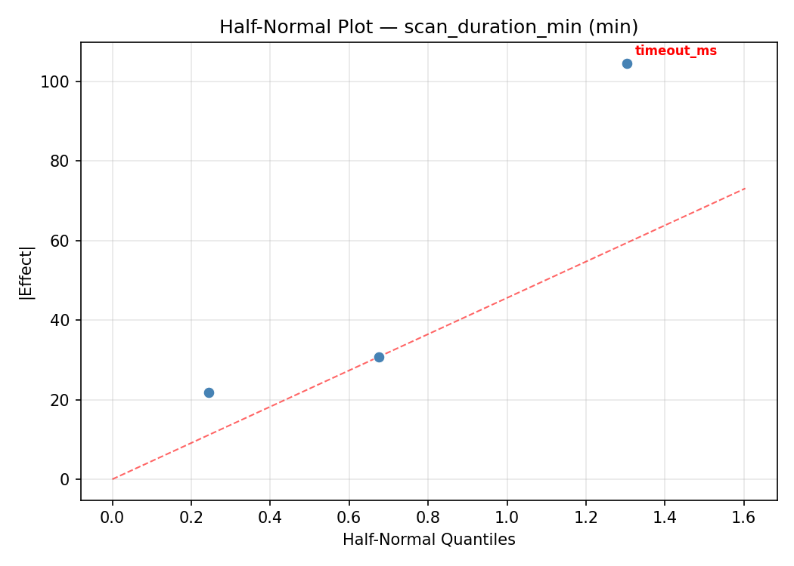
Model Diagnostics
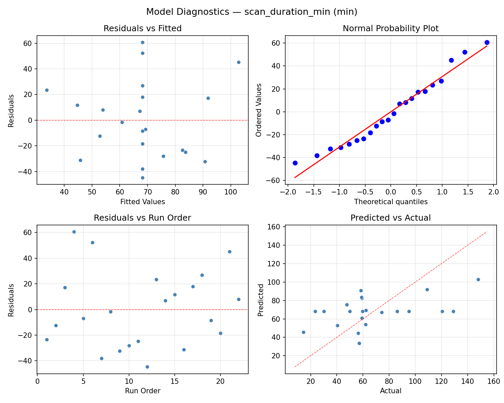
Response: coverage_pct
Top factors: port_range_size (52.5%), timeout_ms (33.4%), scan_threads (14.1%).
ANOVA
| Source | DF | SS | MS | F | p-value |
|---|
| Source | DF | SS | MS | F | p-value |
| scan_threads | 4 | 47.7832 | 11.9458 | 0.054 | 0.9936 |
| port_range_size | 4 | 729.8632 | 182.4658 | 0.820 | 0.5441 |
| timeout_ms | 4 | 757.3365 | 189.3341 | 0.850 | 0.5279 |
| Lack | of | Fit | 2 | 376.5216 | 188.2608 |
| Pure | Error | 7 | 1558.4688 | | |
| Error | 9 | 1934.9903 | 222.6384 | | |
| Total | 21 | 3469.9732 | 165.2368 | | |
Pareto Chart

Main Effects Plot
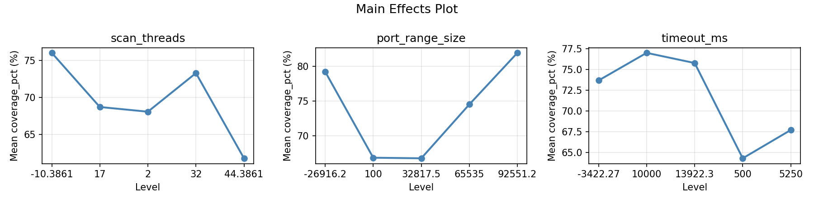
Normal Probability Plot of Effects
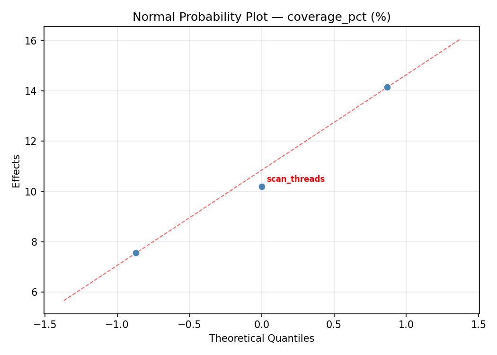
Half-Normal Plot of Effects
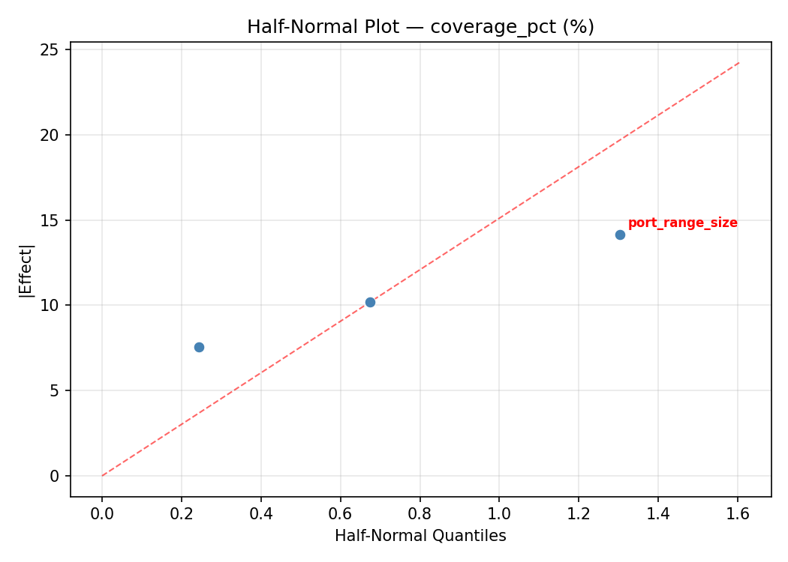
Model Diagnostics
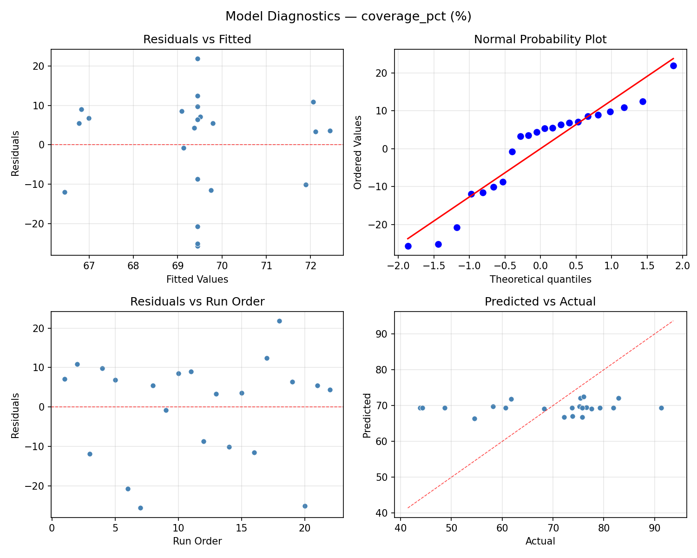
Response Surface Plots
3D surfaces fitted with quadratic RSM. Red dots are observed data points.
coverage pct port range size vs timeout ms
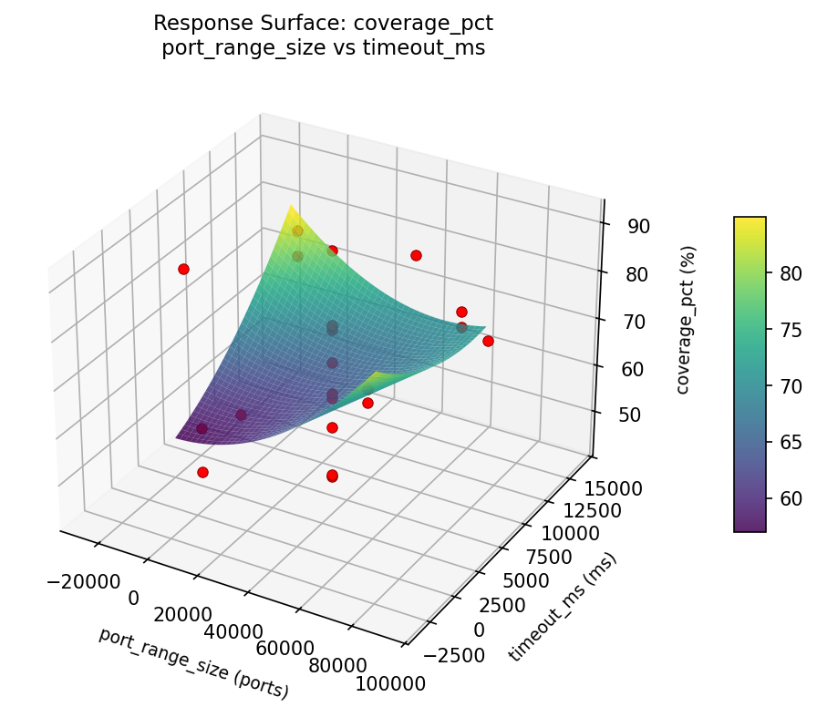
coverage pct scan threads vs port range size

coverage pct scan threads vs timeout ms

scan duration min port range size vs timeout ms
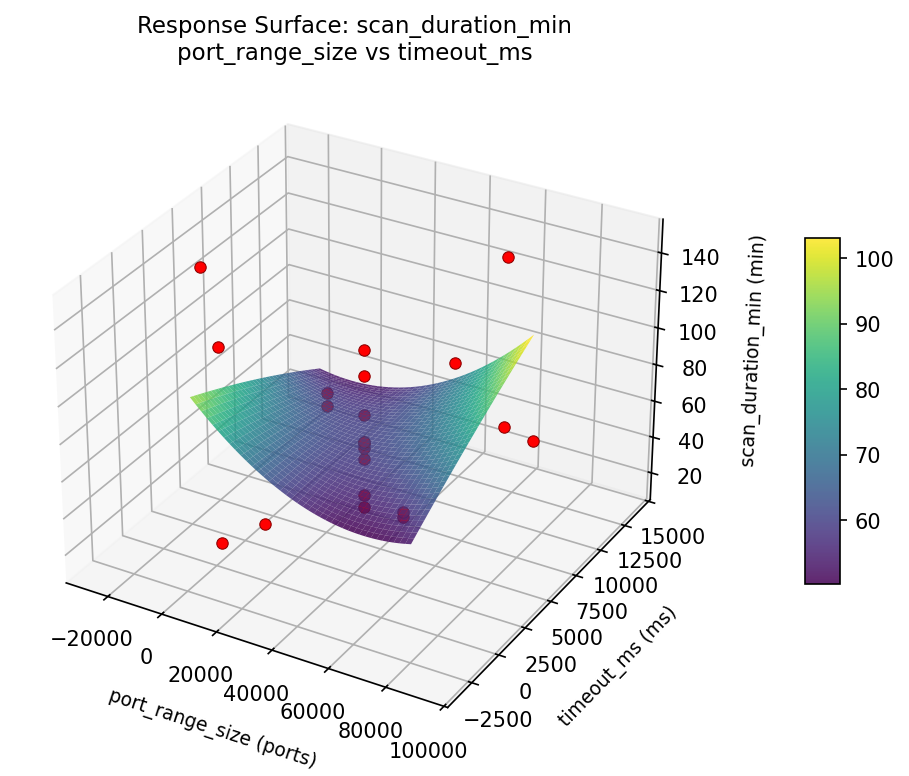
scan duration min scan threads vs port range size

scan duration min scan threads vs timeout ms

Multi-Objective Optimization
When responses compete, Derringer–Suich desirability finds the best compromise.
Each response is scaled to a 0–1 desirability, then combined via a weighted geometric mean.
Overall Desirability
D = 0.7874
Per-Response Desirability
| Response | Weight | Desirability | Predicted | Dir |
|---|
scan_duration_min |
1.0 |
|
40.50 0.7780 40.50 min |
↓ |
coverage_pct |
1.5 |
|
82.90 0.7938 82.90 % |
↑ |
Recommended Settings
| Factor | Value |
|---|
scan_threads | 2 threads |
port_range_size | 100 ports |
timeout_ms | 10000 ms |
Source: from observed run #2
Trade-off Summary
Sacrifice = how much worse than single-objective best.
| Response | Predicted | Best Observed | Sacrifice |
|---|
coverage_pct | 82.90 | 91.30 | +8.40 |
Top 3 Runs by Desirability
| Run | D | Factor Settings |
|---|
| #10 | 0.7073 | scan_threads=32, port_range_size=100, timeout_ms=10000 |
| #18 | 0.6781 | scan_threads=2, port_range_size=65535, timeout_ms=500 |
Model Quality
| Response | R² | Type |
|---|
coverage_pct | 0.1506 | linear |
Full Multi-Objective Output
============================================================
MULTI-OBJECTIVE OPTIMIZATION
Method: Derringer-Suich Desirability Function
============================================================
Overall desirability: D = 0.7874
Response Weight Desirability Predicted Direction
---------------------------------------------------------------------
scan_duration_min 1.0 0.7780 40.50 min ↓
coverage_pct 1.5 0.7938 82.90 % ↑
Recommended settings:
scan_threads = 2 threads
port_range_size = 100 ports
timeout_ms = 10000 ms
(from observed run #2)
Trade-off summary:
scan_duration_min: 40.50 (best observed: 14.60, sacrifice: +25.90)
coverage_pct: 82.90 (best observed: 91.30, sacrifice: +8.40)
Model quality:
scan_duration_min: R² = 0.1323 (linear)
coverage_pct: R² = 0.1506 (linear)
Top 3 observed runs by overall desirability:
1. Run #2 (D=0.7874): scan_threads=2, port_range_size=100, timeout_ms=10000
2. Run #10 (D=0.7073): scan_threads=32, port_range_size=100, timeout_ms=10000
3. Run #18 (D=0.6781): scan_threads=2, port_range_size=65535, timeout_ms=500
Full Analysis Output
=== Main Effects: scan_duration_min ===
Factor Effect Std Error % Contribution
--------------------------------------------------------------
port_range_size 98.1000 7.2297 53.9%
timeout_ms 68.0000 7.2297 37.4%
scan_threads 15.9500 7.2297 8.8%
=== ANOVA Table: scan_duration_min ===
Source DF SS MS F p-value
-----------------------------------------------------------------------------
scan_threads 4 370.9970 92.7492 0.068 0.9901
port_range_size 4 7634.2395 1908.5599 1.400 0.3092
timeout_ms 4 5171.2970 1292.8242 0.948 0.4797
Lack of Fit 2 1426.4715 713.2357 0.523 0.6142
Pure Error 7 9545.3587 1363.6227
Error 9 10971.8302 1363.6227
Total 21 24148.3636 1149.9221
=== Summary Statistics: scan_duration_min ===
scan_threads:
Level N Mean Std Min Max
------------------------------------------------------------
-10.3861 1 58.5000 0.0000 58.5000 58.5000
17 12 66.8333 40.9081 14.6000 148.0000
2 4 70.7500 29.0065 40.5000 109.0000
32 4 74.4500 30.7951 56.3000 120.5000
44.3861 1 59.7000 0.0000 59.7000 59.7000
port_range_size:
Level N Mean Std Min Max
------------------------------------------------------------
-26916.2 1 49.9000 0.0000 49.9000 49.9000
100 4 71.6750 24.9996 56.3000 109.0000
32817.5 12 60.1917 31.8012 14.6000 128.9000
65535 4 73.5250 34.2283 40.5000 120.5000
92551.2 1 148.0000 0.0000 148.0000 148.0000
timeout_ms:
Level N Mean Std Min Max
------------------------------------------------------------
-3422.27 1 23.5000 0.0000 23.5000 23.5000
10000 4 53.7000 8.8931 40.5000 59.2000
13922.3 1 57.1000 0.0000 57.1000 57.1000
500 4 91.5000 27.6983 62.2000 120.5000
5250 12 69.9667 38.6573 14.6000 148.0000
=== Main Effects: coverage_pct ===
Factor Effect Std Error % Contribution
--------------------------------------------------------------
port_range_size 27.9000 2.7406 52.5%
timeout_ms 17.7750 2.7406 33.4%
scan_threads 7.5000 2.7406 14.1%
=== ANOVA Table: coverage_pct ===
Source DF SS MS F p-value
-----------------------------------------------------------------------------
scan_threads 4 47.7832 11.9458 0.054 0.9936
port_range_size 4 729.8632 182.4658 0.820 0.5441
timeout_ms 4 757.3365 189.3341 0.850 0.5279
Lack of Fit 2 376.5216 188.2608 0.846 0.4689
Pure Error 7 1558.4688 222.6384
Error 9 1934.9903 222.6384
Total 21 3469.9732 165.2368
=== Summary Statistics: coverage_pct ===
scan_threads:
Level N Mean Std Min Max
------------------------------------------------------------
-10.3861 1 68.3000 0.0000 68.3000 68.3000
17 12 69.5750 14.7693 43.8000 91.3000
2 4 68.6000 12.8206 54.5000 82.9000
32 4 68.5750 13.2872 48.7000 76.0000
44.3861 1 75.8000 0.0000 75.8000 75.8000
port_range_size:
Level N Mean Std Min Max
------------------------------------------------------------
-26916.2 1 44.3000 0.0000 44.3000 44.3000
100 4 69.8750 10.2902 54.5000 76.0000
32817.5 12 71.8750 12.5431 43.8000 91.3000
65535 4 67.3000 15.1857 48.7000 82.9000
92551.2 1 72.2000 0.0000 72.2000 72.2000
timeout_ms:
Level N Mean Std Min Max
------------------------------------------------------------
-3422.27 1 60.7000 0.0000 60.7000 60.7000
10000 4 77.4750 3.6326 75.2000 82.9000
13922.3 1 75.4000 0.0000 75.4000 75.4000
500 4 59.7000 10.8207 48.7000 73.8000
5250 12 70.2417 14.5283 43.8000 91.3000
Optimization Recommendations
=== Optimization: scan_duration_min ===
Direction: minimize
Best observed run: #16
scan_threads = 17
port_range_size = 32817.5
timeout_ms = 5250
Value: 14.6
RSM Model (linear, R² = 0.0639, Adj R² = -0.0921):
Coefficients:
intercept +68.2273
scan_threads -9.6108
port_range_size +0.5462
timeout_ms +3.5414
RSM Model (quadratic, R² = 0.2014, Adj R² = -0.3976):
Coefficients:
intercept +66.0641
scan_threads -9.6108
port_range_size +0.5462
timeout_ms +3.5415
scan_threads*port_range_size -8.0250
scan_threads*timeout_ms -1.4250
port_range_size*timeout_ms +16.8500
scan_threads^2 +1.0516
port_range_size^2 +4.3066
timeout_ms^2 -2.1134
Curvature analysis:
port_range_size coef=+4.3066 convex (has a minimum)
timeout_ms coef=-2.1134 concave (has a maximum)
scan_threads coef=+1.0516 convex (has a minimum)
Notable interactions:
port_range_size*timeout_ms coef=+16.8500 (synergistic)
scan_threads*port_range_size coef=-8.0250 (antagonistic)
scan_threads*timeout_ms coef=-1.4250 (antagonistic)
Predicted optimum (from linear model, at observed points):
scan_threads = -10.3861
port_range_size = 32817.5
timeout_ms = 5250
Predicted value: 85.7740
Surface optimum (via L-BFGS-B, linear model):
scan_threads = 32
port_range_size = 100
timeout_ms = 500
Predicted value: 54.5289
Model quality: Weak fit — consider adding center points or using a different design.
Factor importance:
1. timeout_ms (effect: 38.7, contribution: 36.7%)
2. scan_threads (effect: 36.7, contribution: 34.9%)
3. port_range_size (effect: 29.9, contribution: 28.4%)
=== Optimization: coverage_pct ===
Direction: maximize
Best observed run: #18
scan_threads = 17
port_range_size = 32817.5
timeout_ms = 5250
Value: 91.3
RSM Model (linear, R² = 0.0886, Adj R² = -0.0633):
Coefficients:
intercept +69.4409
scan_threads +4.0545
port_range_size +2.0951
timeout_ms -0.3517
RSM Model (quadratic, R² = 0.1732, Adj R² = -0.4470):
Coefficients:
intercept +66.1659
scan_threads +4.0545
port_range_size +2.0951
timeout_ms -0.3517
scan_threads*port_range_size -3.6125
scan_threads*timeout_ms +1.0625
port_range_size*timeout_ms +1.5875
scan_threads^2 +0.7875
port_range_size^2 +2.0475
timeout_ms^2 +2.0775
Curvature analysis:
timeout_ms coef=+2.0775 convex (has a minimum)
port_range_size coef=+2.0475 convex (has a minimum)
scan_threads coef=+0.7875 convex (has a minimum)
Notable interactions:
scan_threads*port_range_size coef=-3.6125 (antagonistic)
port_range_size*timeout_ms coef=+1.5875 (synergistic)
scan_threads*timeout_ms coef=+1.0625 (synergistic)
Predicted optimum (from linear model, at observed points):
scan_threads = 44.3861
port_range_size = 32817.5
timeout_ms = 5250
Predicted value: 76.8434
Surface optimum (via L-BFGS-B, linear model):
scan_threads = 32
port_range_size = 65535
timeout_ms = 500
Predicted value: 75.9422
Model quality: Weak fit — consider adding center points or using a different design.
Factor importance:
1. port_range_size (effect: 21.0, contribution: 37.1%)
2. timeout_ms (effect: 17.9, contribution: 31.7%)
3. scan_threads (effect: 17.6, contribution: 31.2%)